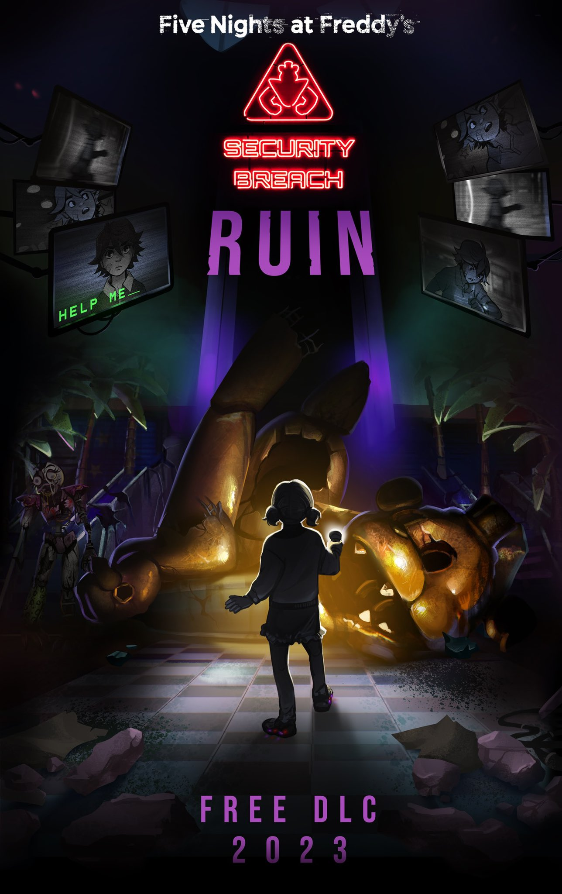

Fan page This is a fan page, and has nothing to do with the real Scott or his page.
This page is designed to recreate the atmosphere of the old Scott page, without any malice. All rights belong to Scott Cawthon. Site created by jestxfot.vercel.app